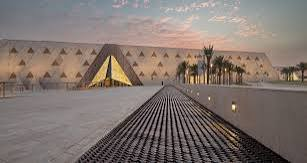
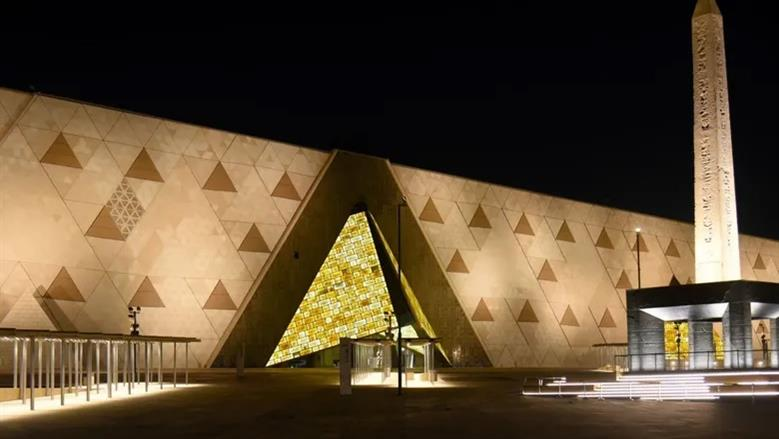

المتحف المصري الكبير صرح الحضارة المصرية
نافذة حضارية تجمع بين عظمة الماضي وإبداع الحاضر، وتحكي قصة واحدة من أقدم وأعظم الحضارات الإنسانية.
ما هو المتحف المصري الكبير؟
التعرف على أكبر مشروع ثقافي وحضاري من نوعه في مصر.
المتحف المصري الكبير، المعروف اختصارًا باسم GEM، هو متحف أثري عالمي يقع في منطقة الجيزة بالقرب من أهرامات الجيزة الثلاثة، ويُعد من أبرز المشروعات الثقافية والحضارية التي شهدتها مصر في العصر الحديث.
أُنشئ المتحف ليكون مركزًا عالميًا لعرض وحفظ ودراسة التراث المصري القديم، من خلال مجموعة ضخمة من القطع الأثرية التي تعكس تطور الحضارة المصرية عبر عصورها المختلفة.
ولا تقتصر وظيفة المتحف على عرض الآثار فقط، بل يمتد دوره ليشمل البحث العلمي والترميم والتعليم والتبادل الثقافي، باستخدام أحدث الأساليب والتقنيات المتخصصة في مجال المتاحف.
ويتميز المتحف بارتباطه البصري والمعماري بأهرامات الجيزة، ليشكل امتدادًا حضاريًا بين آثار الماضي والتكنولوجيا المعاصرة.

الموقع الجغرافي للمتحف
حيث تلتقي العمارة الحديثة بأحد أعظم المواقع الأثرية في العالم.

في قلب الجيزة
يقع المتحف المصري الكبير على هضبة الجيزة، بالقرب من أهرامات خوفو وخفرع ومنقرع، في موقع يربط بين المشهد الحضاري القديم والتطور العمراني الحديث.
التصميم المعماري للمتحف
هندسة حديثة تستلهم جمال العمارة المصرية القديمة.

عمارة تحكي التاريخ
يتميز المتحف بتصميم معماري معاصر يعتمد على الأشكال الهندسية والخطوط المائلة، ويستحضر في تكوينه البصري العلاقة بين أهرامات الجيزة والعمارة المصرية القديمة.
ويعتمد التصميم على تكوينات هندسية مثلثة ومساحات واسعة تسمح بتوفير تجربة عرض مميزة للزوار، مع الاستفادة من الضوء الطبيعي والإطلالات على المنطقة المحيطة.
فالمبنى ليس مجرد مساحة لحفظ الآثار، بل عنصر معماري يعبر عن الهوية الحضارية المصرية بلغة معمارية حديثة.
المثلثات الهندسية
استلهام بصري من الأهرامات والهوية المعمارية المصرية.
الإضاءة الطبيعية
توظيف الضوء في تشكيل تجربة العرض داخل المبنى.
المساحات الواسعة
مساحات عرض وممرات تتيح حركة الزوار واستكشاف المقتنيات.
الهوية المصرية
ربط العمارة الحديثة بالتراث الحضاري المصري.
رحلة إنشاء المتحف
من الفكرة الأولى إلى الافتتاح الرسمي.
لم يكن إنشاء المتحف المصري الكبير مشروعًا عاديًا، بل رحلة طويلة مرت بمراحل متعددة من التخطيط والتصميم والبناء والتجهيز، حتى أصبح أحد أبرز الصروح الثقافية في مصر.
ظهور فكرة إنشاء المتحف
بدأت فكرة إنشاء متحف مصري كبير يواكب مكانة الحضارة المصرية، ويقدم تراثها بأساليب عرض حديثة.
وضع حجر الأساس
شهد هذا العام وضع حجر الأساس للمشروع في موقعه بالقرب من أهرامات الجيزة.
انطلاق أعمال الإنشاء
بدأت أعمال تنفيذ المشروع وتحويل التصميمات المعمارية إلى واقع.
التشغيل التجريبي
بدأت مرحلة التشغيل التجريبي لبعض أجزاء المتحف، بما أتاح اختبار تجربة استقبال الزوار والخدمات.
الافتتاح الرسمي الكبير
شهد الأول من نوفمبر 2025 الافتتاح الرسمي للمتحف المصري الكبير، وبدأ استقبال الجمهور في الرابع من نوفمبر.
رسالة المتحف وأهدافه
المتحف مؤسسة ثقافية وعلمية تتجاوز فكرة العرض التقليدي.
الحفاظ على التراث
حماية القطع الأثرية والمحافظة عليها للأجيال القادمة.
البحث العلمي
دعم الدراسات والأبحاث المتخصصة في الحضارة المصرية القديمة.
التعليم والثقافة
نشر المعرفة التاريخية وتقديم تجارب تعليمية للطلاب والزوار.
التواصل الحضاري
تقديم الحضارة المصرية إلى العالم وتعزيز الحوار الثقافي.
ماذا يضم المتحف؟
مجموعة متنوعة من الآثار التي توثق جوانب الحضارة المصرية.


خلف كل قطعة أثرية قصة علمية
يضم المتحف مركزًا متخصصًا في ترميم وصيانة الآثار، حيث يلتقي علم الآثار بالكيمياء والفيزياء والهندسة والتكنولوجيا الحديثة للمساعدة في دراسة القطع الأثرية والحفاظ عليها.
اكتشف مركز الترميملماذا يُعد المتحف مشروعًا مهمًا؟
قيمته لا تتوقف عند الآثار الموجودة بداخله.
قيمة تاريخية
توثيق جوانب متعددة من تاريخ الحضارة المصرية وعرض آثارها بصورة منظمة.
قيمة علمية
دعم الترميم والبحث والدراسة باستخدام تخصصات علمية متعددة.
قيمة سياحية
تعزيز مكانة مصر على خريطة السياحة الثقافية العالمية.
قيمة تعليمية
إتاحة المعرفة التاريخية والثقافية للطلاب والباحثين والزوار.
المتحف في صور
مشاهد معمارية وحضارية من عالم المتحف.



المصادر والمراجع
تعتمد الموسوعة على المصادر الرسمية والمؤسسات العلمية المتخصصة لضمان دقة المعلومات التاريخية.
ملاحظة: تُراجع البيانات التفصيلية والأرقام مع المصادر الرسمية قبل نشر النسخة النهائية.